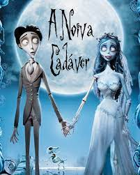

A Noiva Cadáver
Sinopse:
As famílias de Victor e Victoria estão arranjando seu casamento. Nervoso com a cerimônia, Victor vai sozinho à floresta para ensaiar seus votos. No entanto, o que ele pensava ser um tronco de árvore na verdade é o braço esquelético de Emily, uma noiva que foi assassinada depois de fugir com seu amor. Convencida que Victor acabara de lhe pedir a mão em casamento, Emily o leva para o mundo dos mortos, mas ele precisa retornar rapidamente antes que Victoria se case com o malvado Lorde Barkis.